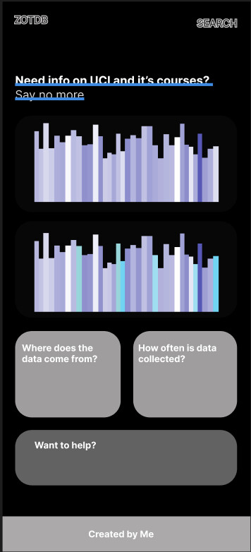
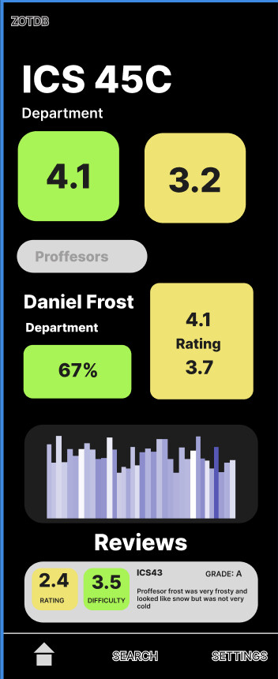

Project Overview
ZotDB is a user-friendly platform designed to help students navigate UCI's academic landscape. The platform provides valuable insights to help inform academic decisions, making it easier to succeed at UCI.
Key Features
- Course Ratings: Browse and filter courses by rating, difficulty, and department.
- Professor Lookup: Search for professors and view their overall rating, difficulty, and reviews from past students.
- Student Reviews: Read reviews from students who have taken the course or had the professor.
Showcase


About the Data
Most of the data on ZotDB was sourced from the Rate My Professors (RMP) website. We've worked to make this information more accessible and user-friendly, providing a valuable resource for UCI students.